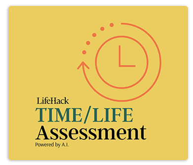

Manajemen waktu yang baik sangat penting untuk menyeimbangkan antara studi, pekerjaan, dan kehidupan pribadi. Disiplin dalam mengatur waktu bisa meningkatkan produktivitas.
"Bukan soal seberapa banyak waktu yang kita miliki, tapi bagaimana kita menggunakannya."
Sumber: Lifehack